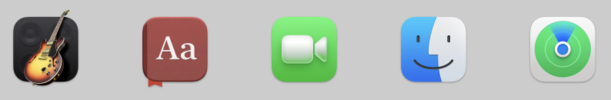
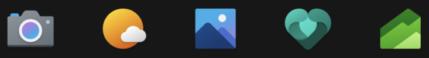
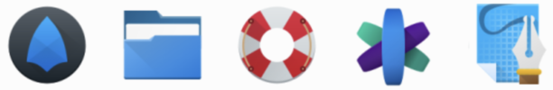

|
AUI Framework
master
Cross-platform base for C++ UI apps
|
|
AUI Framework
master
Cross-platform base for C++ UI apps
|
The app icon is an important part of any software product, representing your brand identity and conveying the purpose of your project. It's often one of the first things users see when they discover a new application, setting a tone for overall user experience. Approach to app icon briefly resembles the overall quality of the product.
While making distinct visuals for every platform can be challenging, AUI is here to help you to produce professional-grade app icons while preserving targeted platform's specifics.
aui_app is a CMake command provided by AUI that defines platform-specific technical information about your application, including ICON.
aui.toolbox is used by aui_app to convert icon to platform-specific formats.
AUI forces you to use SVG to ensure your icon renders correctly on all platforms. In addition, the usage of SVG avoids image pixelization on HiDPI (High Dots Per Inch) displays.
If you only have images in raster formats (such as PNG, ICO, etc.) you need to vectorize by tracing the image. Modern vector image editors (such as Adobe Illustrator or Inkscape) have built-in tools to perform this procedure. If you wish, you can also use various online vectorizers.
For instance, let's see how to vectorize your image using Inkscape editor. Just follow the next instruction:
Modern operating systems tend to enforce icon shape to unify their launchers. For example, iOS is known for its distinctive "squircle" shape, a unique combination of square and circle with subtle curvature that deviates from the more traditional rounded rectangle. In Android the user is allowed to choose between rectangle, rounded rectangle, circle and squircle shapes. Moreover, it features a clear distinction between background and foreground layers so the icon can be animated.
For that being said, a typical shape-agnostic app icon consists of:
On the other hand, Windows and Linux applications tend to have non-uniform shapes.
| Platform | Sample Visuals | Guidelines |
|---|---|---|
| - forced shape trend - | ||
| Android | ||
| iOS |

| Apple Developer Apple Design Resources |
| macOS (with some exceptions) | ||
| - freeform trend - | ||
| Windows |

| Microsoft |
| Linux |

| Flathub |
| GNOME | ||
| KDE | ||